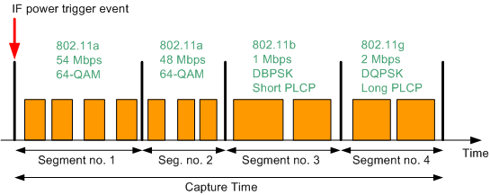
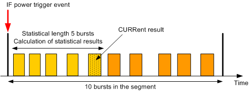
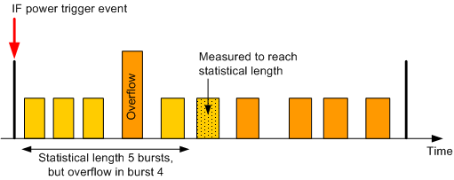

Each segment contains an integer number of bursts with the same underlying standard, burst type and modulation. The bursts can have a different duration and also the gaps between bursts can vary. The entire measurement length over all bursts of all segments is called capture time. The figure below shows a series of four segments. Orange rectangles depict measured bursts.

The R&S CMW supports up to 100 segments with up to 1000 bursts per segment. The maximum capture time is 1 s.
In list mode, the R&S CMW can measure modulation and transmit spectrum mask results. The measured quantities can be enabled or disabled individually for each segment.
It is possible to measure all bursts of a segment or to limit the measurement to some bursts (statistical length) at the beginning of the segment. The "current" result of a segment refers to the last measured burst of the statistical length. Additional statistical values (average, maximum and standard deviation) are calculated for the entire statistical length. The example below shows a segment with 10 bursts and a statistical length of five measured bursts.

Results of bursts that cannot be measured accurately because of overflow, low signal or synchronization error can be discarded (parameter "Measure on Exception" = Off). In that case, the measurement still tries to provide results for the specified statistical length. If not enough bursts of the segment can be measured, a shorter statistical length is used. In the example shown below, overflow occurs in the fourth burst. The samples of this burst are discarded and burst number 6 is measured to reach the specified statistical length. The reached statistical length, a reliability indicator for the measurement and a reliability indicator for the segment are included in the measurement results.

The list mode is essentially a single-shot remote control application. When a measurement is initiated in list mode, all defined segments are measured once. Afterwards, the results can be retrieved using FETCh commands. The following remote control commands are used for list mode settings and result retrieval:
Parameters | SCPI commands |
|---|---|
Number of segments | |
Number of bursts, WLAN standard, ... | |
Statistical length | |
Activate / deactivate list mode | |
Capture time | |
Channel filter estimation (802.11b) | |
Retrieve results | FETCh:WLAN:MEAS<i>:MEValuation:LIST:SEGMent<Seg>:... FETCh:WLAN:MEAS<i>:MEValuation:LIST:... See "List Mode Results (One Segment)" and "List Mode Results (All Segments)" |
The list mode can be deactivated via command (see table above) and also via the GUI:
Go to local using the corresponding hotkey.
The active list mode is indicated in the upper right corner of the current view by the words "List Mode!".
In the configuration dialog box, section "Measurement Control", disable the list mode.
Global and list mode parameters Some settings are available as special list mode settings and as "multi-evaluation" settings (e.g. WLAN standard and modulation type). In list mode, the R&S CMW ignores these "multi-evaluation" parameters. All other settings not available as special list mode settings are taken from the multi-evaluation measurement, e.g.:
|